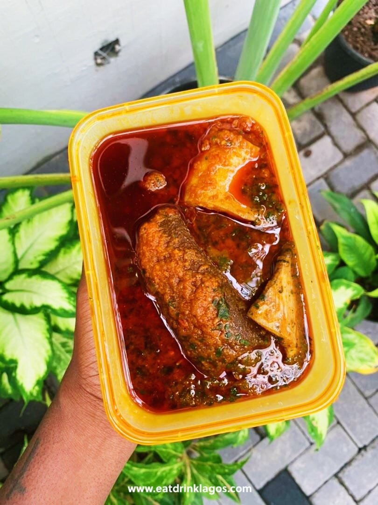

Abula soup

Abula is a Yoruba tribe soup in Nigeria. It is know for it nice smell and lots of vitamins food items usually contains.
Ingredient(s):
- Seasonings
- Palm oil
- Pepper
- Fish and assorted meat
- Locust bean (Iru)
- cooked meshed beans
- Ewedu leaves
Steps:
- Make stew with the assorted meat/fish and the pepper (seperately)
- Make Ewedu soup with the leaves and the Locust beans
- Make Gbegiri soup with the cooked meshed beans and palm oil.
Homepage